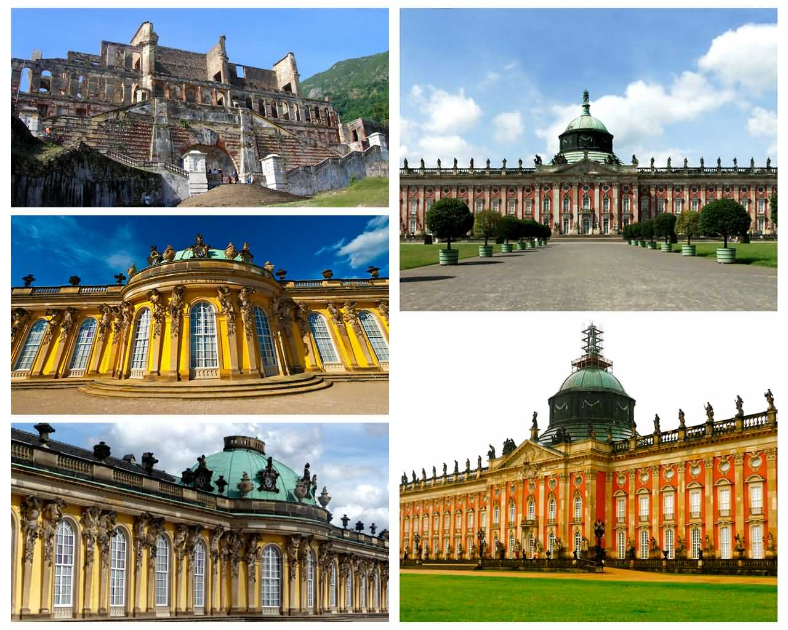
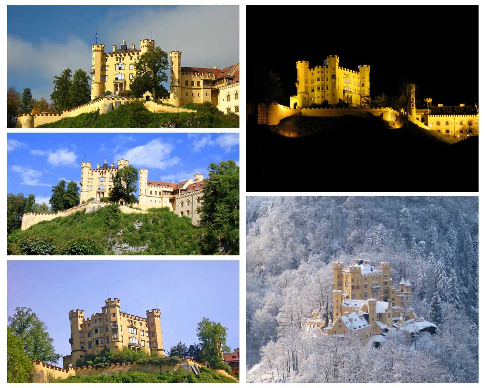
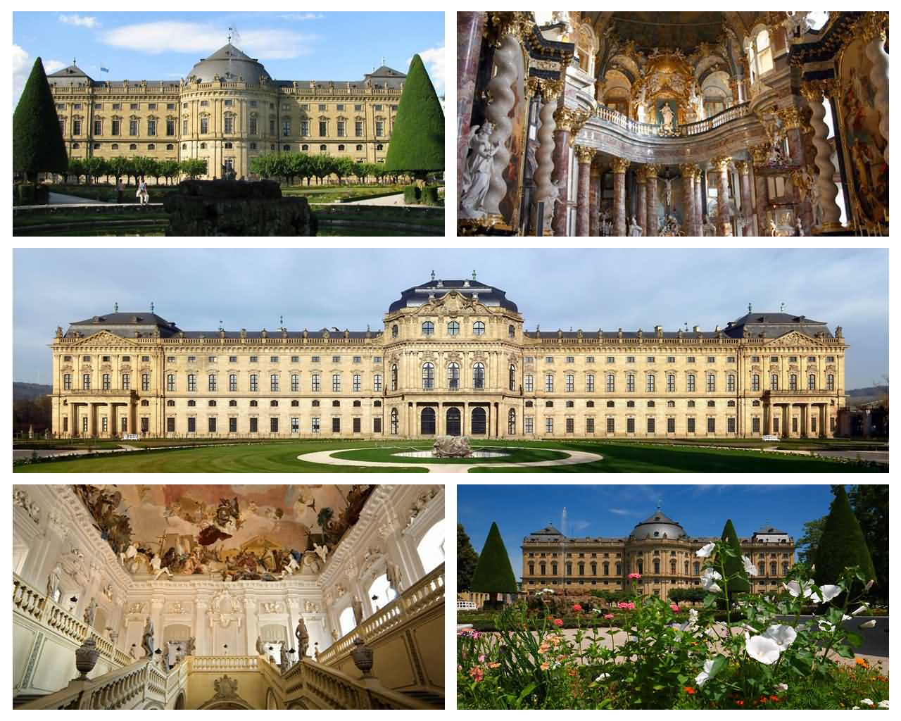

德国波茨坦市无忧宫(Sans Souci Palace)

18世纪德意志王宫和园林。位于德国波茨坦市北郊，为普鲁士国王腓特烈二世模仿法国凡尔赛宫所建。宫名取自法文的“无忧”或“莫愁”。整个王宫及园林面积为90公顷 ，因建于一个沙丘上，故又称“沙丘上的宫殿”。 宫殿正殿中部为半圆球形顶，两翼为长条锥脊建筑。殿正中为圆厅。瑰丽的首相厅，天花板上装潢富有想象力，四壁镶金，光彩夺目。室内多用壁画和明镜装饰，辉煌璀璨。宫殿前有平行的弓形6级台阶 ，两侧和周围由翠绿丛林烘托。 宫殿前有喷泉，正对着大殿门廊。此喷泉采用圆形花瓣石雕，四周有“火”、“水”、“土” 、“气”4个圆形花坛陪衬 ，花坛内塑有神像，尤以维纳斯像和水星神像造型精美，形象生动。
据说整个宫内有1000多座以希腊神话人物为题材的石刻雕像。宫殿东侧还有珍藏124 幅名画的画廊 ，这些绘画多为文艺复兴时期意大利、荷兰画家的名作。画廊宽敞明亮，每逢佳节，这里都举办音乐会。 花园内有一座六角凉亭，采用中国传统的碧绿筒瓦 、金黄色柱 、伞状盖顶 、落地圆柱结构 ，被称为“中国茶亭”。亭内桌椅完全仿造东方式样制造，亭前矗立着中国式香鼎。无忧宫是18世纪德国建筑艺术的精华， 全部建筑工程前后延续时间达50年之久。虽经战争，但未遭受炮火轰击，至今仍保存完好。
德国巴伐利亚州施万高镇高天鹅堡(Hohenschwangau Castle)

高天鹅堡是德国浪漫主义时期的一块瑰宝，在12世纪刚刚建成后就迎来了它的伟大时期，并成为当时宫廷抒情诗的中心题材。城堡的主人和建造者是施万高的骑士。施万高的西尔波特是留下姓名的众多骑士之一，也是“海德堡歌曲集” （亦被称作“马奈塞手抄本”）中的宫廷抒情诗人。施万高的骑士原是维芬和斯道芬的采邑主，经常来这里做客。最后一个斯道芬人，16岁时（1268年）在那波利被斩首的康拉丁王子曾经居住在这里。
16世纪时，施万高的骑士全部去世了，城堡濒于坍塌，并于1800年至1809年拿破仑战争期间遭到了严重的破坏。由于城堡地理位置极佳，当时的王储马克西米连，也就是后来的马克西米连二世国王，路德维希二世国王的父亲，将废墟购买下来， 并于1832年至1836年加以重新修整。许多著名的浪漫主义时期艺术家参与了重建工作，诸如莫里兹·冯·施温德（Moritz von Schwind），多米尼克·克瓦里欧（Domenico Quaglio）等。今天人们能够参观城堡里面的14个房间，应该归功于他们。
巴伐利亚的童话国王路德维希二世在这里度过了他生命中的大部分时光，并在这里接见过瓦格纳。后者从未涉足过新天鹅堡和基姆湖皇宫。高天鹅堡内的浪漫主义风格对国王路德维希二世的性格产生了重大的影响。
德国艾森纳赫瓦尔特堡城堡(Wartburg Castle)

瓦尔特堡（Wartburg）坐落在德国图林根州阿尔卑斯山北部余脉的瓦尔特堡，是一座几乎没有遭到破坏的中世纪城堡。这座城堡建于1067年，最后完工在1170年。无论是建筑材料还是建筑规模或城堡内的设施，瓦尔特堡都是首屈一指的。1521——1522年间， 宗教改革家马丁-路德为了逃避教皇和皇帝的追捕而在此避难和躲藏，在城堡中，他以神奇的速度将新约从希腊文翻译成为德文，城堡中至今保存有传说中的路德秘密隧道。瓦尔特堡也是德国世界遗产之一。
德国乌兹堡主教宫(Residenz Palace)

维尔茨堡主教宫建于1720-1744年间，是德国南部巴洛克式的杰作，也是欧洲最出色的宫殿之一。最终的设计者是德国最负盛名的巴洛克建筑大师巴尔塔萨尔·诺依曼，现在宫殿已被列入了联合国教科文组织世界遗产名录。 主教宫由宫殿、花园和广场三部分组成，由热爱艺术的约翰．菲力浦．法兰兹．荀伯伦主教所建，在1719年授意名建筑师巴尔塔萨尔·诺依曼设计兴建宫殿，于1744年完工，是两任乌兹堡大公兼主教的府邸。 宫殿外观是典点型的巴洛克式建筑，但内部却是华丽的洛可可式，为德国巴洛克建筑的极品，更代表了整个欧洲宫廷最奢华灿烂的年代。